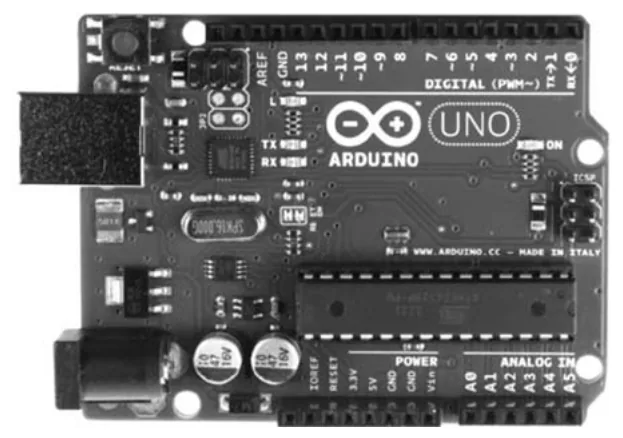

Have you ever looked at some gadget and wondered how it really worked? Maybe it was a remote control boat, the system that controls an elevator, a vending machine, or an electronic toy? Or have you wanted to create your own robot or electronic signals for a model railroad, or perhaps you’d like to capture and analyze weather data over time? Where and how do you start?
The Arduino board (shown in Figure 1-1) can help you find some of the answers to the mysteries of electronics in a hands-on way. The original creation of Massimo Banzi and David Cuartielles, the Arduino system offers an inexpensive way to build interactive projects, such as remote-controlled robots, GPS tracking systems, and electronic games.
The Arduino project has grown exponentially since its introduction in 2005. It’s now a thriving industry, supported by a community of people united with the common bond of creating something new. You’ll find both individuals and groups, ranging from interest groups and clubs to local hackerspaces and educational institutions, all interested in toying with the Arduino.

To get a sense of the variety of Arduino projects in the wild, you can simply search the Internet. You’ll find a list of groups offering introductory programs and courses with like-minded, creative people.